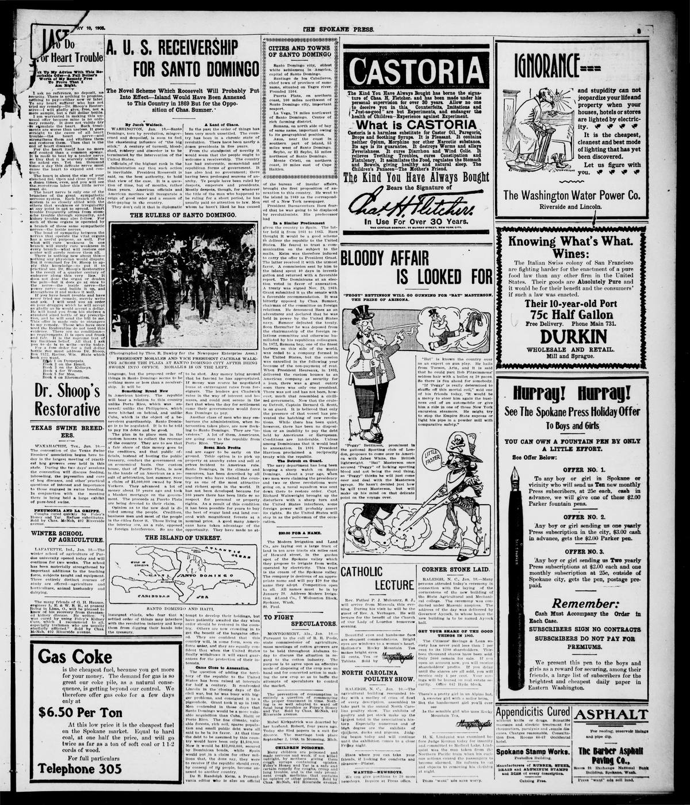

U. S. RECEIVERSHIP FOR SANTO DOMINGO
https://www.loc.gov/resource/sn88085947/1905-01-10/ed-1/?sp=3

See the original pageVer la página original
The Novel Scheme Which Roosevelt Will Probably Put Into Effect—Island Would Have Been Annexed to This Country in 1869 But for the Opposition of Chas. Sumner.
By Jacob Waldeck.
WASHINGTON, Jan. 10.—Santo Domingo, torn by revolution, misgoverned and despoiled, is soon to feel the chastening influence of "the big stick." A century of turmoil, bloodshed, robbery and disorder is to be terminated by the intervention of the United States.
Officials of the highest rank in the administration say that such action is inevitable. President Roosevelt is said, on the best authority, to hold that view of the case. It is a question of time, but of months, rather than years. American officials and American marines will inaugurate a reign of good order and a season of debt-paying in the country.
They don't call it that in diplomatic language, but the proposed order of things in Santo Domingo seems to be nothing more or less than a receivership. It will be
Something Brand New
in American history. The republic will bear a relation to this country unlike Porto Rico, which was annexed; unlike the Philippines, which were hitched on behind, and unlike Cuba, which is the object of a benevolent guardianship. Santo Domingo is to be regulated. It is to be told to pay its debts and be good.
The plan is to place men in the custom houses to collect the revenue of the country. They are to see that a fair share of this money goes to the creditors, and that public officials, instead of looting the public treasury, conduct the government on an economical basis. One custom house, that of Puerto Plata, is now in the hands of an American as a result of arbitration, last summer, over a claim of $5,000,000 owned by New Yorkers. They advanced a lot of money about 10 years ago and took a blanket mortgage on the government. The proceeds at Puerto Plata are being devoted to their claim.
Opinion as to the new deal is divided among the people. Creditors, business men and most of the people of the cities favor it. Those living in the interior are, as a rule, opposed to foreign interference. So are the insurgent chiefs, who fear that a settled order of things may interfere with the revolution industry and keep them from digging their hands into the treasury.
A Land of Chaos.
In the past the order of things has been very much unsettled. The country has been in a chronic state of revolution. There have been nearly a dozen presidents in five years.
From the standpoint of novelty it would seem that the people ought to welcome a receivership. The country has had autocratic, monarchial and republican forms of government. It has also had no government; there having been prolonged seasons of anarchy. Te people have been ruled by despots, emperors and presidents. Mostly despots, though, for whatever the title of the man who happened to be ruling for a short period, he has usually paid no attention to law. Men whom he hasn't liked he has caused to be shot. Any money lying around that he fancied he has appropriated. If money was scarce he negotiated loans at extravagant rates from foreigners. The lenders got Chadwick rates in the way of interest and bonuses, and could rest serene in the fact that when the day for settlement came their governments would force San Domingo to pay.
Another class of men who may embarrass the administration, when intervention takes place, are now flocking to Santo Domingo. They are "investors." A lot of them, Americans, are going over to the republic from Porto Rico. They
Scent Rich Profits
and are eager to be early on the ground. Tehir option is to pick up property at anarchy rates and sell at prices incident to American rule. Santo Domingo, in its climate and resources, has been described by all travelers who have visited the country as one of the most attractive and richest spots in the world. It has not been developed because for 100 years there has been little or no respect for personal or property rights. As a result of this condition it has been possible for years to buy the best of sugar land and land covered with magnificent forests at a nominal price. A good many Americans have taken advantage of the opportunity. They have made no attempt to develop their holdings, but have patiently awaited the day when order should be restored in the country. Others are now crowding in to get the benefit of the bargains offered. They are confident that this country will, in some form, soon enforce order, and they are equally confident that when the United States finally withdraws it will exact guarantees for the protection of their interests.
Came Close to Annexation.
The question of adding the territory of the republic to the United States has been raised at intervals for half a century. It confronted Lincoln in the closing days of the civil war, but he was busy with bigger problems, and consigned it to a pigeonhole. Grant took it up in 1869. Men contended in those days that Santo Domingo would be a more valuable acquisition than Cuba, Haiti or Porto Rico. The fine climate, valuable forests, rich soil, sparse population and small public debt were all said to be in its favor. At that time the debt to be assumed by this country would have been only $1,500,000. Now it would be $32,000,000, secured by Dominican bonds, while Spain would put in a claim for other millions that, the dons say, they were to receive if the republic should ever, by consent of its people, become annexed to another country.
De B. Randolph Keim, a Pennsylvania editor who is also an official of the bureau of insular affairs, brought the first proposition of annexation to this country. He went to the island in 1869 as the correspondent of a New York newspaper.
President Buenaventura Baez feared that he was going to be displaced by revolutionists. His predecessor had
In a Similar Predicament
given the country to Spain. The latter held it from 1861 to 1865. Baez thought it would be a good scheme to deliver the republic to the United States. He feared to trust a communication on the subject to the mails. Keim was therefore induced to carry the offer to President Grant. The latter received it with the utmost favor. A commission sent by him to the island spent 40 days in investigation and returned with a favorable report. The Dominicans at an election voted in favor of annexation. A treaty was signed Nov. 29, 1869. Grant submitted it to the senate with a favorable recommendation. It was bitterly opposed by Chas. Sumner, chairman of the committee on foreign relations. He denounced Baez as an adventurer and declared that he was held in power by the United States navy. Sumner defeated the treaty. Soon thereafter he was deposed from the chairmanship of the foreign relations committee and otherwise humiliated by his republican colleagues. In 1872, Samana bay, one of the finest harbors on this side of the world, was ceded to a company formed in the United States, but the cession was cancelled in the following year because of the non-payment of rent. When President Heureaux, in 1893, delivered the custom houses to an American company as security for a loan, there was a great outcry soon there was only one president. There was not and has not been, however, much that resembled a civilized governmetn. Now that the cruiser Detroit, Captain Bernard G. Scott, is on guard. It is believed that only the presence of that vessel has prevented the hatching of new revolutions. While there has been quiet, however, there has been no disposition or an inability to pay the debt held by Americans or Europeans. Conditions are intolerable. Unless among Dominicans that it would lead to annexation. In 1891 President Harrison proclaimed a reciprocity treaty with the republie.
The Detroit on Guard.
The navy department has long been keeping a sharp watch on Santo Domingo. About a year ago, when two men were claiming the presidency and two or three revolutions were going on, a naval squadron was sent down there to restore order. Capt. Richard Wainwright brought up the disturbers with a sharp turn and the United States interferes, some foreign power will probably assert its rights. So the United States will step in as the policeman of the occacation.
How to cite this articleCómo citar este artículo
The Spokane Press. (1905). Spokane, Wash., January 10, 190510 de enero de 1905. DR in the American PressRD en la Prensa Norteamericana. Library of Congress, Chronicling America: https://www.loc.gov/resource/sn88085947/1905-01-10/ed-1/?sp=3
ReferencesReferencias
Library of Congress, Chronicling America: The Spokane Press, January 10, 190510 de enero de 1905.
Send an observationEnviar una observación
Does this article connect with your family, your town, or something you know? Did we get something wrong? Write to us. Observations go to the editor's inbox and are read by a person.¿Este artículo conecta con su familia, su pueblo o algo que usted conoce? ¿Nos equivocamos en algo? Escríbanos. Las observaciones llegan al buzón del editor y las lee una persona.
Send observationEnviar observación